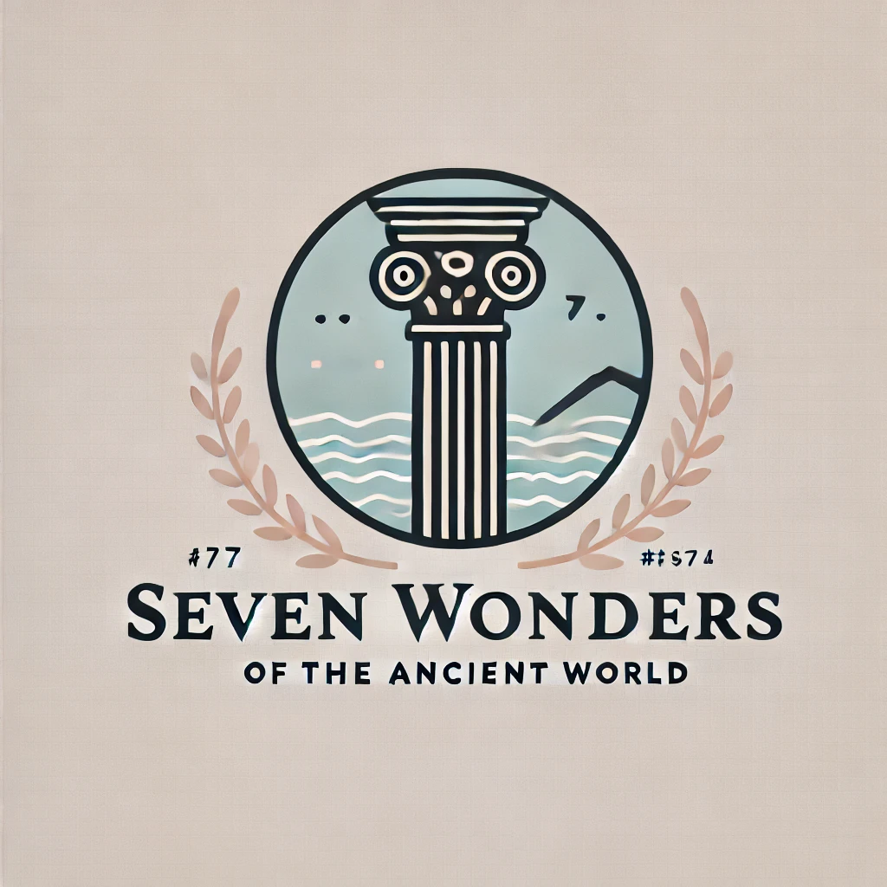
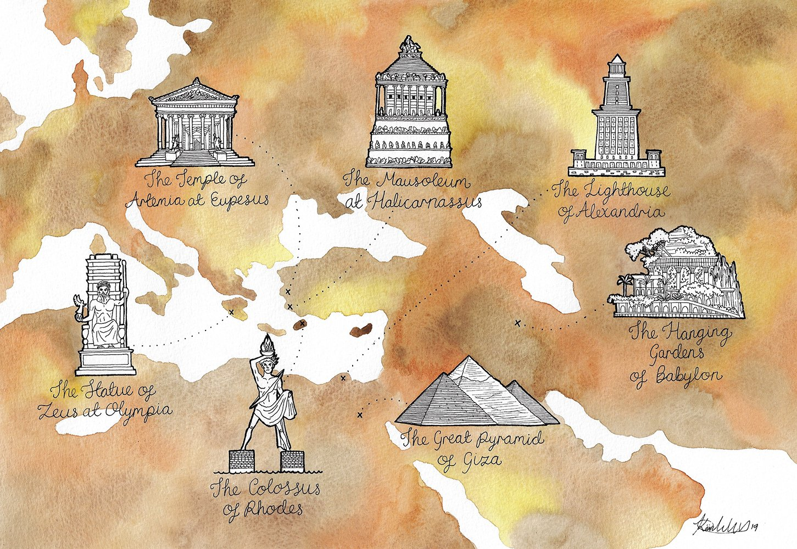

The Seven Wonders of the Ancient World

Visitor's Guide

- The Great Pyramid of Giza (Egypt)
- Visit the only surviving wonder! Explore the vast pyramids, and try to visit the Great Pyramid of Khufu, located near Cairo. Don't miss the Sphinx nearby!
- The Hanging Gardens of Babylon (Iraq)
- Although the gardens' existence is debated, you can visit the ancient ruins of Babylon near Hillah, Iraq. A guided tour can help uncover its mysteries.
- The Statue of Zeus (Greece)
- In Olympia, Greece, you can explore the archaeological site of the temple dedicated to Zeus, even though the statue itself is lost.
- The Temple of Artemis (Turkey)
- Visit the site in Ephesus, Turkey, where parts of the temple and a reconstructed column remain, showcasing its former grandeur.
- The Mausoleum at Halicarnassus (Turkey)
- In Bodrum, Turkey, visit the ruins of this massive tomb. The remnants were used in the construction of Bodrum Castle.
- The Colossus of Rhodes (Greece)
- Although the statue no longer stands, you can visit the harbor of Rhodes and see the remnants of the foundation, along with museums displaying its history.
- The Lighthouse of Alexandria (Egypt)
- Located on the Mediterranean coast of Egypt, most of the lighthouse is submerged, but you can visit the underwater ruins or tour the nearby Citadel of Qaitbay.